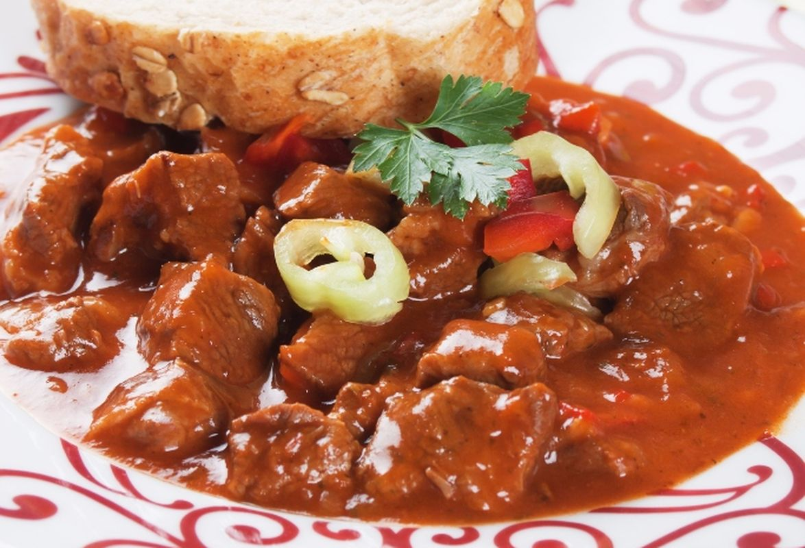

Guláš

| Porcie |
6 |
| Kalórie na porciu |
550 kcal |
| Bielkoviny |
40g |
| Tuky |
25g |
| Sacharidy |
45g |
| Vláknina |
5g |
Ingrediencie
- 1.5 kg hovádzie mäso
- 4 cibuľe
- 3 lyžice papriky
- 1 kg zemiakov
- 1.5 litra hovádieho vývaru
- 2 lyžice oleja
- soľ, korenie, kmín
Postup
- Mäso nakrájame na väčšie kocky a smažíme na oleji do zhnednutia.
- Pridáme jemne nakrájanú cibuľu a prepražíme.
- Sprísume paprika a miešame.
- Zalijeme vývarem a vložíme kmeň s kminkou.
- Vňom dusíme mäso asi 1.5 hodiny.
- Pridáme nakrájané zemiaky a vieme ďalej asi 30-40 minút.
- Dochutíme soľou a korením.
- Podávame teplé, ideálne s knedľami alebo chlebom.
← Späť na recepty